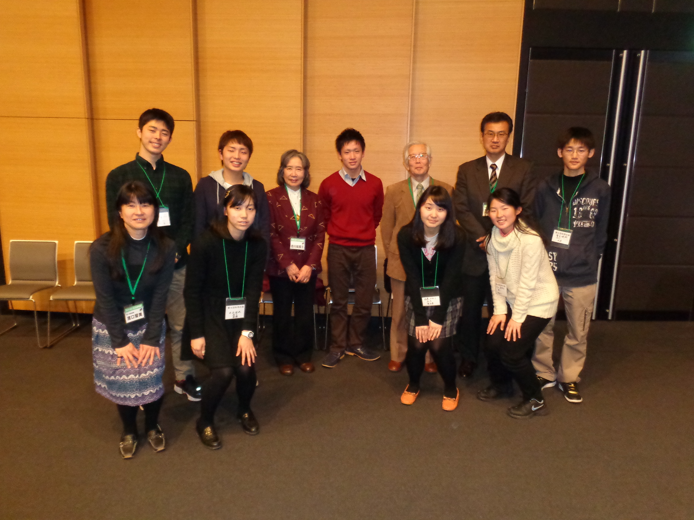

Welcome my page!
I am Nanako.
About
科学の泉
ノーベル化学賞を受賞された白川英樹先生を塾長にした夏休みの合宿。小学５年時に参加しました。毎年開かれる同窓会では司会として参加しています。
Detail
WSO
東南アジアの恵まれない子供達に初めてのオーケストラ体験を届ける団体です。 1週間という短い期間で8回もの演奏会と学校訪問を行い、音楽の素晴らしさ、楽しさを伝えます。 日本では味わえない近い距離のお客さんに如何に想いを伝えられるか、残せるかに挑戦する毎日でした。


琴辻城
東京学芸大学附属高校出身者を中心に設計・建築・運営されている、現在築城中の山城のことです。 群馬県藤岡市にある城主の土地で様々なバックグラウンドを持つ人々によって作られています。 埼玉の城主宅にて木材の切り出しから鑿や鉋を用いた加工を施したのち、軽トラで琴辻の地まで運んで組み立てました。

麺 活
気付いた時には大好きでした。
「麺活」という言葉は、中学の先生がよく使っている言葉を借りました。
元々ラーメンが一番好きな食べ物でしたが、去年の8月に今の行きつけのつけ麺やに出会ってから、麺活に火がつきました。
麺、チャーシュー、味玉、スープ、その他の多種多様な具材たち。それぞれの分野で大好きな店が増えていきました。
もちろん一品として好きな店も存在します。そんな素晴らしき丼に出会うために麺活は今後も続けていくつもりです！